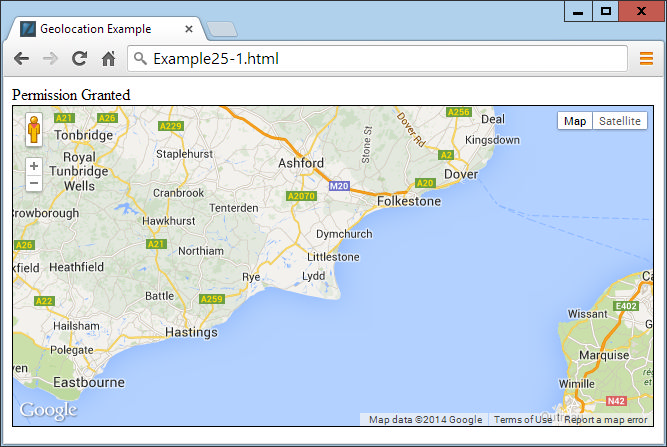
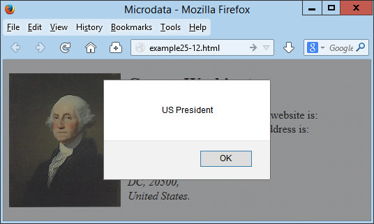

Other HTML5 Features
In this final chapter on HTML5, I explain how to use geolocation, local storage, and web workers; show you how to allow web apps to run offline; and demonstrate the use of in-browser dragging and dropping.
Strictly speaking, most of these features (like much of HTML5) aren’t really extensions to HTML, because you access them with JavaScript rather than with HTML markup. They are simply technologies that are being embraced by browser developers, and have been given the handy umbrella name of HTML5.
This means, though, that you need to have fully understood the JavaScript tutorial in this book in order to use them properly. That said, once you get the hang of them, you’ll wonder how you ever did without these powerful new features.
Geolocation and the GPS Service
The GPS (Global Positioning Satellite) service consists of multiple satellites orbiting the earth whose positions are very precisely known. When a GPS-enabled device tunes into them, the different times at which signals from these various satellites arrive enable the device to quite accurately know where it is; because the speed of light (and therefore radio waves) is a known constant, the time it takes a signal to get from a satellite to a GPS device indicates the satellite’s distance.
By noting the different times at which signals arrive from different satellites, which are in precisely known orbital locations at any one time, a simple triangulation calculation gives the device its position relative to the satellites within a few meters or less.
Many mobile devices, such as phones and tablets, have GPS chips and can provide this information. But some don’t, others have them tuned off, and others may be used indoors where they are shielded from the GPS satellites and therefore cannot receive any signals. In these cases, additional techniques may be used to attempt to determine your location.
Other Location Methods
If your device has mobile phone hardware but not GPS, it may attempt to triangulate its location by checking the timing of signals received from the various communication towers with which it can communicate (and whose positions are very precisely known). If there are a few towers, this can get almost as close to your location as GPS. But where there’s only a single tower, the signal strength can be used to determine a rough radius around the tower, and the circle it creates represents the area in which you are likely to be located. This could place you anywhere within a mile or two of your actual location, down to within a few tens of meters.
Failing that, there may be known Wi-Fi access points whose positions are known within range of your device, and since all access points have a unique identifying address called a MAC (Media Access Control) address, a reasonably good approximation of location can be obtained, perhaps to within a street or two. This is the type of information that Google Street View vehicles have been collecting.
And if that fails, the IP (Internet Protocol) address used by your device can be queried and used as a rough indicator of your location. Often, though, this provides only the location of a major switch belonging to your Internet provider, which could be dozens or even hundreds of miles away. But at the very least, your IP address can (usually) narrow down the country and sometimes the region you are in.
IP addresses are commonly used by media companies for restricting playback of their content by territory. However, it’s a simple matter to set up proxy servers that use a forwarding IP address (in the territory that is blocking outside access) to fetch and pass content through the blockade directly to a “foreign” browser. Proxy servers are also often employed to disguise a user’s real IP address or bypass censorship restrictions, and can be shared across many users on a Wi-Fi hotspot (for example). Therefore, if you locate someone by IP address, you can’t be completely sure that you have identified the right location, or even country, and should treat this information as only a best guess.
Geolocation and HTML5
In Chapter 22 , I briefly introduced HTML5 geolocation. Now it’s time to look at it in depth, starting with the example I gave you before, shown again in Example 25-1 .
Example 25-1. Displaying a map of your current location
<!DOCTYPE html>
<html>
<head>
<title>Geolocation Example</title>
<script src='OSC.js'></script>
<script src="https://maps.googleapis.com/maps/api/js?sensor=false"></script>
</head>
<body>
<div id='status'></div>
<div id='map'></div>
<script>
if (typeof navigator.geolocation == 'undefined')
alert("Geolocation not supported.")
else
navigator.geolocation.getCurrentPosition(granted, denied)
function granted(position)
{
O('status').innerHTML = 'Permission Granted'
S('map').border = '1px solid black'
S('map').width = '640px'
S('map').height = '320px'
var lat = position.coords.latitude
var long = position.coords.longitude
var gmap = O('map')
var gopts = {
center: new google.maps.LatLng(lat, long),
zoom: 9, mapTypeId: google.maps.MapTypeId.ROADMAP
}
var map = new google.maps.Map(gmap, gopts)
}
function denied(error)
{
var message
switch(error.code)
{
case 1: message = 'Permission Denied'; break;
case 2: message = 'Position Unavailable'; break;
case 3: message = 'Operation Timed Out'; break;
case 4: message = 'Unknown Error'; break;
}
O('status').innerHTML = message
}
</script>
</body>
</html>
Let’s walk through this code and see how it works, starting with the <head> section, which displays a title; loads in the OSC.js file containing the O , S , and C functions I provided to make accessing HTML elements from JavaScript easier; and then also pulls in the JavaScript code for the Google Maps service, which is drawn on later in the program.
After this, two <div> elements are created—one for displaying the connection status, and the other for the map:
<div id='status'></div>
<div id='map'></div>
The remainder of the document is JavaScript, which immediately starts by interrogating the navigator.geolocation property. If the value returned is undefined , then geolocation is not supported by the browser and an error alert window is popped up.
Otherwise, the getCurrentPosition method of the property is called, passing it the names of two functions: granted and denied (remember that by passing function names, we pass the actual function code, not the result of calling the function, which would be the case if the function names had brackets attached):
navigator.geolocation.getCurrentPosition(granted, denied)
These functions appear later in the script and are for handling the two possibilities of permission to provide the user’s location data: granted or denied . The granted function comes first and is entered only if the data can be accessed.
In this function, the innerHTML property of the div element with the ID of status is set to the string Permission Granted to indicate success during the delay while the map is being fetched. Then the map div has some CSS styles applied to give it a border and set its dimensions:
O('status').innerHTML = 'Permission Granted'
S('map').border = '1px solid black'
S('map').width = '640px'
S('map').height = '320px'
Next, the variables lat and long are given the values returned by the geolocation routines in the browser, and the object gmap is created to access the map div element:
var lat = position.coords.latitude
var long = position.coords.longitude
var gmap = O('map')
After this, the object gopts is populated with the values in lat and long , the zoom level is set (in this case to 9), and the ROADMAP map type is selected:
var gopts =
{
center: new google.maps.LatLng(lat, long),
zoom: 9, mapTypeId: google.maps.MapTypeId.ROADMAP
}
Last, in this function, we create a new map object by passing gmap and gopts to the Map method of the google.maps object (the code for which you will recall was loaded in just after the OSC.js file).
var map = new google.maps.Map(gmap, gopts)
If permission is granted to access the user’s location, the result looks like Figure 25-1 .

Figure 25-1. An interactive map of the user’s location is displayed
If permission is denied or there is another issue, an error message is the only thing displayed, as output to the innerHTML property of the status div by the denied function, according to the problem encountered:
switch(error.code)
{
case 1: message = 'Permission Denied'; break;
case 2: message = 'Position Unavailable'; break;
case 3: message = 'Operation Timed Out'; break;
case 4: message = 'Unknown Error'; break;
}
O('status').innerHTML = message
The Google map will be fully interactive and zoomable by the user, who can also change the map type to satellite imagery.
You can set a different zoom level or imagery type by providing different values to the gopts object. For example, a value of 1 for zoom will zoom out the furthest, and 20 will zoom in the most. A value of SATELLITE for the google.maps.MapTypeId property will switch to satellite imagery, or HYBRID will combine map and satellite data.
The sensor=false setting from the tail of the URL where the script is loaded in (near the start of the document), should be set to true if you know that the user’s device has a GPS sensor; otherwise, leave it as it is. If you simply want to display a Google map for a specific location, and not access the user’s location data, you can use the core code in the granted function, replacing the lat and long (and other) values with ones of your choosing. Also, if you would prefer to use Bing maps instead of Google, refer to http:// tinyurl.com/bingmapsapi , or the following long URL: http://micro soft.com/web/post/using-the-bing-maps-api .
Local Storage
Cookies are an essential part of the modern Internet because they enable websites to save on each user’s machine small snippets of information that can be used for tracking purposes. Now this isn’t as ominous as it sounds, because most of the tracking going on helps web surfers by saving usernames and passwords, keeping them logged into a social network such as Twitter or Facebook, and more.
Cookies can also locally save your preferences for the way you access a website (rather than having those settings stored on the website’s server) or can be used to keep track of a shopping cart as you build up an order on an ecommerce website.
But yes, they can also be used more aggressively to track the websites you frequent and gain a picture of your interests to try to target advertising more effectively. That’s why the European Union now requires all websites within its borders to alert you to this, and let you disable cookies if you so choose.
But, as a web developer, think how useful it can be keeping data on user’s devices, especially if you have a small budget for computer servers and disk space. For example, you could create in-browser web apps and services for editing word processing documents, spreadsheets, and graphic images, saving all this data offsite on users’ computers and keeping your server purchasing budget as low as possible.
From the user’s point of view, think about how much faster a document can be loaded up locally than from across the Web, especially on a slow connection. Plus, there’s more security if you know that a website is not storing copies of your documents. Of course, you can never guarantee that a website or web app is totally secure, and should never work on highly sensitive documents using software (or hardware) that can go online. But for minimally private documents such as family photographs, you might feel more comfortable using a web app that saves locally than one that saves files to an external server.
Using Local Storage
The biggest problem with using cookies for local storage is that you can save a maximum of 4KB of data in each. Cookies also have to be passed back and forth on every page reload. And, unless your server uses SSL (Secure Sockets Layer) encryption, each time a cookie is transmitted, it travels in the clear.
But with HTML5, you have access to a much larger local storage space (typically between 5MB and 10MB per domain depending on the browser) that remains over page loads, and between website visits (and even after powering a computer down and back up again). Also, the local storage data is not sent to the server on each page load.
You handle local storage data in key/value pairs. The key is the name assigned for referencing the data, and the value can hold any type of data, but it is saved as a string. All data is unique to the current domain, and for security reasons any local storage created by websites with different domains is separate from the current local storage, and is not accessible by any domain other than the one that stored the data.
The localStorage Object
You gain access to local storage by means of the localStorage object. To test whether this object is available, you query its type to check whether or not it has been defined, like this:
if (typeof localStorage == 'undefined')
{
// Local storage is not available, tell the user and quit.
// Or maybe offer to save data on the web server instead?
}
How you handle the lack of local storage being available will depend on what you intend to use it for, so the code you place inside the if statement will be up to you.
Once you’ve ascertained that local storage is available, you can start making use of it with the setItem and getItem methods of the localStorage object, like this:
localStorage.setItem('username', 'ceastwood')
localStorage.setItem('password', 'makemyday')
To later retrieve this data, pass the keys to the getItem method, like this:
username = localStorage.getItem('username')
password = localStorage.getItem('password')
Unlike saving and reading cookies, you can call these methods at any time you like, not simply before any headers have been sent by the web server. The saved values will remain in local storage until erased in the following manner:
localStorage.removeItem('username')
localStorage.removeItem('password')
Or, you can totally wipe the local storage for the current domain by calling the clear method, like this:
localStorage.clear()
Example 25-2 combines the preceding examples into a single document that displays the current values of the two keys in a pop-up alert message, which initially will be null . Then the keys and values are saved to local storage, retrieved, and redisplayed, this time having assigned values. Finally, the keys are removed and then an attempt at retrieving these values is again made, but the returned values are once again null . Figure 25-2 shows the second of these three alert messages.
Example 25-2. Getting, setting, and removing local storage data
if (typeof localStorage == 'undefined')
{
alert("Local storage is not available")
}
else
{
username = localStorage.getItem('username')
password = localStorage.getItem('password')
alert("The current values of 'username' and 'password' are\n\n" + username + " / " + password + "\n\nClick OK to assign values")
localStorage.setItem('username', 'ceastwood')
localStorage.setItem('password', 'makemyday')
username = localStorage.getItem('username')
password = localStorage.getItem('password')
alert("The current values of 'username' and 'password' are\n\n" + username + " / " + password + "\n\nClick OK to clear values")
localStorage.removeItem('username')
localStorage.removeItem('password')
username = localStorage.getItem('username')
password = localStorage.getItem('password')
alert("The current values of 'username' and 'password' are\n\n" + username + " / " + password)
}

Figure 25-2. Two keys and their values are read from local storage
You are not restricted to just storing usernames and passwords; you can include virtually any and all data, and as many key/value pairs as you like, up to the available storage limit for your domain.
Web Workers
With web workers , you can create sections of JavaScript code that will run in the background, without having to set up and monitor interrupts. Instead, whenever it has something to report, your background process communicates with the main JavaScript through the use of an event.
This means the JavaScript interpreter gets to decide how to allocate time slices most efficiently, and your code only needs to worry about communicating with the background task whenever there’s information to convey.
Example 25-3 shows how you can set up web workers to compute a repetitive task in the background—in this instance, calculating prime numbers. Example 25-3. Setting up and communicating with a web worker
<!DOCTYPE html>
<html>
<head>
<title>Web Workers</title>
<script src='OSC.js'></script>
</head>
<body>
Current highest prime number:
<span id='result'>0</span>
<script>
if (!!window.Worker)
{
var worker = new Worker('worker.js')
worker.onmessage = function (event)
{
O('result').innerHTML = event.data;
}
}
else
{
alert("Web workers not supported")
}
</script>
</body>
</html>
This example first creates a <span> element with the ID of result in which output from the web worker will be placed. Then, in the <script> section, window.Worker is tested via a !! pair of not operators. This has the effect of returning a Boolean value of true if the Worker method exists, and false otherwise. If it is not true , a message is displayed in the else section, alerting us that web workers are not available.
Otherwise, a new worker object is created by calling Worker , passing it the filename worker.js (shown shortly). Then the onmessage event of the new worker object is attached to an anonymous function that places any message passed to it by worker.js into the innerHTML property of the previously created <span> element.
The web worker itself is saved in the file worker.js , in Example 25-4 .
Example 25-4. The worker.js web worker
var n = 1
search: while (true)
{
n += 1
for (var i = 2; i <= Math.sqrt(n); i += 1)
{
if (n % i == 0) continue search
}
postMessage(n)
}
This file assigns the value 1 to the variable n . It then loops continuously, incrementing n and checking it for primality by a brute-force method of testing all values from 1 to the square root of n to see if they divide exactly into n , with no remainder. Should a factor be found, the continue command stops the brute-force attack immediately because the number is not prime, and starts processing at the next higher value of n .
But if all possible factors are tested and none result in a zero remainder, then n must be prime, so its value is passed to postMessage , which sends a message back to the onmessage event of the object that set up this web worker. The result looks like the following:
Current highest prime number: 30477191
To stop a web worker from running, issue a call to the terminate method of the worker object, like this:
worker.terminate()
If you wish to stop this particular example from running, you can enter the following into your browser’s address bar:
javascript:worker.terminate()
Also note that due to the way Chrome handles security, you cannot use web workers on a file system, only from a web server (or running the files from localhost on a development server such as Zend Server, detailed in Chapter 2 ).
Offline Web Applications
By providing the right information to a browser, you can tell it how to download all the components of a web page to enable it to be loaded and run offline. The main file you need is a manifest file with the file extension .appcache . To illustrate a simple web app, I chose to create a clock, so the manifest file is given the filename clock.appcache and looks like Example 25-5 .
Example 25-5. The clock.appcache file
CACHE MANIFEST
clock.html
OSC.js
clock.css
clock.js
The first line in this file declares it to be a manifest file. The lines following list the files the browser needs to download and store, starting with Example 25-6 , the clock.html file, and followed by the OSC.js file, which is the same one used by many examples in this book.
Example 25-6. The clock.html file
<!DOCTYPE html>
<html manifest='clock.appcache'>
<head>
<title>Offline Web Apps</title>
<script src='OSC.js'></script>
<script src='clock.js'></script>
<link rel='stylesheet' href='clock.css'>
</head>
<body>
<p>The time is: <output id='clock'></output></p>
</body>
</html>
This file declares that it has a manifest file available from within the
<html> tag: <html manifest='clock.appcache'>
To support offline web apps, you will need to add the MIME type text/cache-manifest for the file extension .appcache to your server, in order for it to send the manifest file using the correct type. There’s a neat shortcut you can use for this, which is to create a file called .htaccess in the same folder as the files to be made available offline, with the following contents:
AddType text/cache-manifest .appcache
The files OSC.js , clock.js , and clock.css are then imported and used by the document. The JavaScript in clock.js is listed in Example 25-7 .
Example 25-7. The clock.js file
setInterval(function()
{
O('clock').innerHTML = new Date()
}, 1000)
This is a very simple anonymous function attached to an interval that repeats once a second to save the current date and time into the innerHTML property of the <output> element that has the ID of clock .
The final file is the clock.css file (see Example 25-8 ), which simply applies bold styling to the <output> element.
Example 25-8. The clock.css file
output { font-weight:bold; }
As long as the clock.appcache file lists them all, these four files ( clock.html , OSC.js , clock.css , and clock.js ) together make up a working offline web application, which will be downloaded and made available locally by any web browser that understands offline web apps. When run, the output looks like this:
The time is: Thu Jul 19 2018 15:24:26 GMT+0000 (GMT Standard Time)
For details on the offline web application specifications, you can check out the official website at http://tinyurl.com/offlinewebapps .
Drag and Drop
You can easily support dragging and dropping of objects on a web page by setting up event handlers for the ondragstart , ondragover , and ondrop events, as in Example 25-9 .
Example 25-9. Dragging and dropping objects
<!DOCTYPE HTML>
<html>
<head>
<title>Drag and Drop</title>
<script src='OSC.js'></script>
<style>
#dest {
background:lightblue;
border :1px solid #444;
width :320px;
height :100px;
padding :10px;
}
</style>
</head>
<body>
<div id='dest' ondrop='drop(event)' ondragover='allow(event)'></div><br>
Drag the image below into the above element<br><br>
<img id='source1' src='image1.png' draggable='true' ondragstart='drag(event)'>
<img id='source2' src='image2.png' draggable='true' ondragstart='drag(event)'>
<img id='source3' src='image3.png' draggable='true' ondragstart='drag(event)'>
<script>
function allow(event)
{
event.preventDefault()
}
function drag(event)
{
event.dataTransfer.setData('image/png', event.target.id)
}
function drop(event)
{
event.preventDefault()
var data=event.dataTransfer.getData('image/png')
event.target.appendChild(O(data))
}
</script>
</body>
</html>
After setting up the HTML, title, and loading in the OSC.js file, this document styles the div element with the ID of dest , giving it a background color, border, set dimensions, and padding.
Then, in the <body> section, the div element is created, and its ondrop and ondrag over events have the event handler functions drop and allow attached to them. After this there’s some text, and then three images are displayed with their draggable properties set to true , and the function drag is attached to the ondragstart event of each.
In the <script> section, the allow event handler function simply prevents the default action for dragging (which is to disallow it), while the drag event handler function calls the setData method of the dataTransfer object of the event, passing it the MIME type image/png and the target.id of the event (which is the object being dragged). The dataTransfer object holds the data that is being dragged during a drag-and-drop operation.
Finally, the drop event handler function also intercepts its default action so that dropping is allowed, and then it fetches the contents of the object being dragged from the dataTransfer object, passing it the MIME type of the object. Then the dropped data is appended to the target (which is the dest div) using its appendChild method.
If you try this example for yourself, you’ll be able to drag and drop the images into the div element, where they will stay, as shown in Figure 25-3 .

Figure 25-3. Two images have been dragged and dropped
Other events you can attach to include ondragenter for when a drag operation enters an element, ondragleave for when one leaves an element, and ondragend for when a dragging operation ends, which you can use (for example) to modify the cursor during these operations.
Cross-Document Messaging
You’ve already seen messaging in use a little earlier, in the web worker section. I didn’t go into any details, however, as it wasn’t the core topic being discussed, and the message was being posted only to the same document anyway. But for obvious security reasons, cross-document messaging does need to be applied with caution, so you need to fully understand its workings if you plan to use it.
Before HTML5, browser developers disallowed cross-site scripting, but as well as blocking potential attack sites, this prevented communication between legitimate pages. Document interaction of any kind generally had to occur through Ajax and a third-party web server, which was cumbersome and fiddly to build and maintain.
But web messaging now allows scripts to interact across these boundaries by using some sensible security restraints to prevent malicious hacking attempts. It is achieved through use of the postMessage method, allowing plain-text messages to be sent from one domain to another.
This requires that JavaScript first obtain the Window object of the receiving document, letting messages post to a variety of other windows, frames, or iframes directly related to the sender’s document. The received message event has the following attributes:
data The incoming message
origin The origin of the sender document, including the scheme, hostname, and port
source The source window of the sender document
The code to send messages is just a single instruction, in which you pass the message to be sent and the domain to which it applies, as in Example 25-10 .
Example 25-10. Sending web messages to an iframe
<!DOCTYPE HTML>
<html>
<head>
<title>Web Messaging (a)</title>
<script src='OSC.js'></script>
</head>
<body>
<iframe id='frame' src='example25-11.html' width='360' height='75'></iframe>
<script>
count = 1
setInterval(function()
{
O('frame').contentWindow.postMessage('Message ' + count++, '*')
}, 1000)
</script>
</body>
</html>
Here the usual use is made of the OSC.js file to pull in the O function, and then an iframe element with the ID of frame is created, which loads in Example 25-11 . Then, within the <script> section, the variable count is initialized to 1 and a repeating interval is set up to occur every second to post the string 'Message ' (using the post Message method) along with the current value of count , which is then incremented. The postMessage call is attached to the contentWindow property of the iframe object, not the iframe object itself. This is important because web messaging requires posts to be made to a window, not to an object within a window.
Example 25-11. Receiving messages from another document
<!DOCTYPE HTML>
<html>
<head>
<title>Web Messaging (b)</title>
<style>
#output {
font-family:"Courier New";
white-space:pre;
}
</style>
<script src='OSC.js'></script>
</head>
<body>
<div id='output'>Received messages will display here</div>
<script>
window.onmessage = function(event)
{
O('output').innerHTML =
'<b>Origin:</b> ' + event.origin + '<br>' +
'<b>Source:</b> ' + event.source + '<br>' +
'<b>Data:</b> ' + event.data
}
</script>
</body>
</html>
This example sets up a little styling to make output clearer, and then creates a div element with the ID output , in which the contents of received messages will be placed. In the <script> section, there’s a single anonymous function attached to the onmessage event of the window. In this function, the event.origin , event.source , and event.data property values are then displayed, as shown in Figure 25-4 .

Figure 25-4. The iframe has so far received 17 messages
Web messaging works only across domains, so you cannot test it by loading files in from a file system; you must use a web server. As you can see from Figure 25-4 , the origin is http://localhost because these examples are running on a local development server. The source is the Window object, and the current message value is Message 17 .
At the moment, Example 25-10 is not at all secure because the domain value passed to postMessage is the wildcard * :
O('frame').contentWindow.postMessage('Message ' + count++,'*')
To direct messages only to documents originating from a particular domain, you can change this parameter. In the current case, a value of http://localhost would ensure that only documents loaded from the local server will be sent any messages:
O('frame').contentWindow.postMessage('Message ' + count++,'http://localhost')
Likewise, as it stands, the listener program displays any and all messages it receives. This is also not a very secure state of affairs, because malicious documents also present in the browser can attempt to send messages that unwary listener code in other documents might otherwise access. Therefore, you can restrict the messages your listeners react to by using an if statement, like this:
window.onmessage = function(event)
{
if (event.origin) == 'http://localhost')
{
O('output').innerHTML =
'<b>Origin:</b> ' + event.origin + '<br>' +
'<b>Source:</b> ' + event.source + '<br>' +
'<b>Data:</b> ' + event.data
}
}
If you always use the proper domain for the site you are working with, your web messaging communications will be more secure. However, be aware that since messages are sent in the clear, there may be insecurities in some browsers or browser plug-ins that might make this kind of communication insecure. One way to boost your security, then, is to create your own obfuscation or encryption scheme for all your web messages, and also consider introducing your own two-way communication protocols to verify each message as being authentic.
Normally, you won’t alert the user to the origin or source values, and will simply make use of them for security checking. These examples, however, display those values to help you experiment with web messaging and see what is going on. As well as iframes, documents in pop-up windows and other tabs may also talk to each other using this method.
Microdata
Microdata is a subset of HTML designed to provide metadata to a document in order to make it have meaning to software, just as it has meaning to a reader of the document. Microdata makes available the following new tag attributes: itemscope , item type , itemid , itemref , and itemprop . Using these, you can clearly define the properties of an item such as a book, providing a range of information that a computer can use to understand, for example, its authors, publishers, contents, and so on.
Or, more frequently these days, microdata is important for search engines and social networking sites. Example 25-12 creates a short bio for George Washington as if it were a profile on a social networking site, with microdata added to the various elements (shown highlighted in bold). The result looks like Figure 25-5 , which will look the same with or without microdata, because it is never visible to the user.
Example 25-12. Adding microdata to HTML
<!DOCTYPE html>
<html>
<head>
<title>Microdata</title>
</head>
<body>
<section itemscope itemtype='http://schema.org/Person'>
<img itemprop='image' src='gw.jpg' alt='George Washington' align='left' style='margin-right:10px'>
<h2 itemprop='name'
>George Washington</h2>
<p>I am the first <span itemprop='jobTitle' >US President</span>.
My website is: <a itemprop='url' href='http://georgewashington.si.edu'>georgewashington.si.edu</a>.
My address is:</p>
<address itemscope itemtype='http://schema.org/PostalAddress' itemprop='address'>
<span itemprop='streetAddress' >1600 Pennsylvania Avenue</span>,<br>
<span itemprop='addressLocality' >Washington</span>,<br>
<span itemprop='addressRegion' >DC</span>,<br>
<span itemprop='postalCode' >20500</span>,<br>
<span itemprop='addressCountry' >United States</span>.
</address>
</section>
</body>
</html>

Figure 25-5. This document contains microdata, which is not visible
Browsers don’t yet really do anything with microdata, but it’s still very worth getting to know it. Using the right microdata gives lots of information to search engines like Google or Bing, and may help to promote clearly annotated pages in the rankings as compared to sites that don’t implement microdata.
However, at some point, browsers may also find a use for this information, and you’ll be able to determine whether or not they support microdata by checking whether the getItems method exists, like this:
if (!!document.getItems)
{
// Microdata is supported
}
else
{
// Microdata is not supported
}
The !! pair of not operators is a shorthand way of returning a Boolean value representing the existence (or lack thereof) of the getItems method. If it exists, then true is returned and microdata is supported; otherwise, false is returned.
Currently, only the Mozilla Firefox and Opera browsers support accessing microdata, but the other browsers are sure to follow soon. When they do, you’ll be able to extract this data in the following manner, in which (after the page has loaded) the data object is retrieved from a call to getItems , and the value for the key 'jobTitle' (just as an example) is retrieved by accessing the data object’s properties object, and then fetching the latter object’s textContent property:
window.onload = function()
{
if (!!document.getItems)
{
data = document.getItems('http://schema.org/Person')[0]
alert(data.properties['jobTitle'][0].textContent)
}
}
Browsers that support this feature will display as Figure 25-6 , but other browsers will not trigger the pop-up window.

Figure 25-6. Displaying the value for the ‘jobTitle’ microdata key
Google has stated that it definitely uses microdata when it finds it, and that microdata is also the preferred snippet format for Google+, so it’s well worth starting to add it to your HTML where applicable. For a complete breakdown of the myriad of microdata properties available, check out http://schema.org , which is also the reference for the microdata schemes as declared in the itemType properties.
Other HTML5 Tags
A number of other new HTML5 tags that have not yet been implemented in many browsers, and therefore I won’t cover them (particularly since their specs could change). But, for the sake of completeness, these tags are <article> , <aside> , <details> , <figcaption> , <figure> , <footer> , <header> , <hgroup> , <keygen> , <mark> , <menuitem> , <meter> , <nav> , <output> , <progress> , <rp> , <rt> , <ruby> , <section> , <summary> , <time> , and <wbr> . You can get more information on these and all other HTML5 tags at http://tinyurl.com/h5markup (check out the elements sporting a NEW icon).